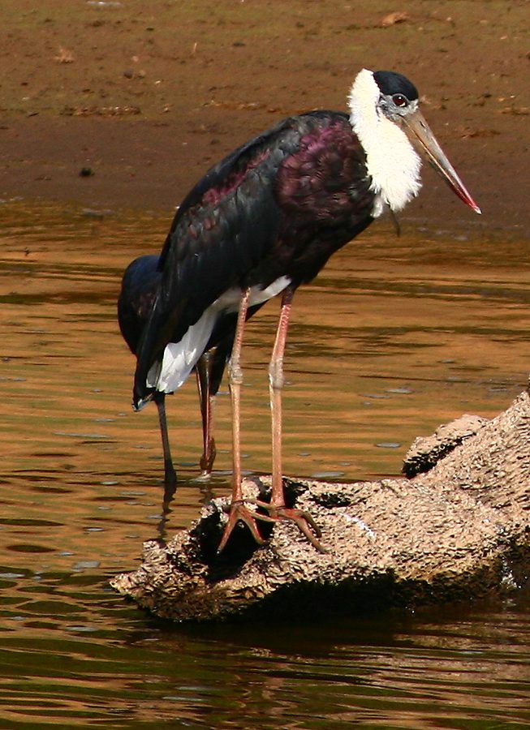

लगलगAsian Woolly-necked Stork
Ciconia episcopus · Ciconiidae · BRD-0077

- Scientific nameवैज्ञानिक नाम
- Ciconia episcopus (Boddaert, 1783)
- Familyकुल
- Ciconiidae
- Hindiहिंदी
- लगलग / मनिकजोर
- Local namesस्थानीय नाम
- laglag, laglagh, manikjor, manik jor, haji laglag
- Status hereयहाँ की स्थिति
- native
- Movementआवागमन
- Resident, here all year
- IUCNIUCN
- VU
- Reviewसमीक्षा
- audited and independently read
When to look कब देखें
Present all year.साल भर मौजूद।
Tell it apart from इनसे अलग पहचानें
लगलग / Asian Woolly-necked Stork
Ciconia episcopus (Boddaert, 1783) — Ciconiidae
लगलग — पूर्वी उत्तर प्रदेश की आर्द्रभूमियों में एक बड़ा, काला और सफेद सारस (stork)। इसके सिर और गर्दन पर विशेष फुलझड़ी जैसे सफेद पंखों की घनी पट्टी होती है — जिसे "woolly" कहते हैं, यही इसके अंग्रेजी नाम का कारण है। यह अकेले या छोटे झुंड में घास के मैदान, तालाब, और धान के खेतों में शिकार करता है।
Quick Identification त्वरित पहचान
| Feature | Description |
|---|---|
| Size | Large stork; 81–97 cm tall |
| Plumage | Glossy black body; white breast and belly; white collar at base of neck |
| Head | Green and purple skin; no feathers on face |
| Neck | Long, decorated with distinctive white woolly feathers |
| Bill | Large, straight, reddish |
| Legs | Red or reddish |
| Eyes | Yellow iris with dark pupil |
Field tip: A large stork with black upperparts, white underparts, and a distinctive white "woolly" collar at the base of the neck — is a Woolly-necked Stork. The white collar is unique and visible from a distance. Stands upright with head held high.
हिंदी — कैसे पहचानें:
काला ऊपर, सफेद नीचे — बड़ा सारस।
गर्दन में सफेद फुलझड़ी जैसे पंख।
लाल चोंच और लाल टाँगें।
अक्सर अकेले या जोड़ी में।
Morphology आकारिकी
Biometrics:
| Measurement | Range |
|---|---|
| Total length | 810–970 mm |
| Wing (flattened chord) | 420–500 mm |
| Tail | 210–250 mm |
| Bill | 110–140 mm |
| Tarsus | 110–150 mm |
| Weight | 2000–2600 g |
Size: 81–97 cm tall; wingspan 150–180 cm. Weight 2000–2800 g.
Plumage: Glossy black-green on the head, neck, back, wings, and tail. Breast and belly white. The most distinctive feature is the collar of long, white, loosely-barbed feathers at the base of the neck, giving a "woolly" appearance.
Head: Bare greenish and purplish skin on the face and crown (not feathered).
Bill: Large, straight, reddish with a yellow tip. Powerful and used for striking at prey.
Legs: Reddish or dark red; long and strong.
Eyes: Yellow iris; forward-facing for binocular vision during hunting.
Breeding plumage: More intensely coloured; the white collar feathers become fuller and more prominent.
Sexes: Identical. Juveniles duller, brownish instead of glossy black; white collar less developed.
Vocalisations. Three main call types:
- Bill-clattering: Loud bill-snapping sounds, the most characteristic call — clack-clack-clack — often performed as an excitation display; frequency 1.5–3.0 kHz.
- Alarm call: Hisses and croaks when disturbed.
- Contact call: Low grunting at the nest during pair bonding.
हिंदी: चोंच से तेज़ क्लिकिंग आवाज़। यही सबसे खास आवाज़ है।
Ecological Role पारिस्थितिक भूमिका
Omnivorous predator: Woolly-necked Storks feed on a variety of prey:
- Fish (medium-sized Channa, Catla, Mystus)
- Frogs and toads
- Crabs and crayfish
- Snakes and lizards
- Insects and dragonflies
- Occasionally small mammals
Hunting style: Walks slowly through shallow water and grassland, stalking and striking at prey. Often hunts in paddy fields during monsoon.
Wetland health indicator: Presence indicates productive wetlands with diverse prey populations.
Colonial nester: Forms heronries alongside other storks and water birds.
Ecosystem engineer: The guano from large nesting colonies enriches wetland nutrient cycling.
हिंदी: मछली, मेंढक, केकड़े, साँप — सब कुछ खाता है। घास के मैदान में शिकार करता है।
Life Cycle / Phenology जीवन चक्र
Resident: Present year-round in eastern UP; no migration, though local movements occur.
Breeding: May–October (monsoon and post-monsoon). Colonial nester.
Nesting: Large platform nest of sticks in tall trees, near water. Trees: tamarisk, peepal, banyan, neem.
Eggs: 3–4 white eggs. Both parents incubate ~28–30 days.
Chicks: Altricial; fed by both parents. Fledge at ~8 weeks.
Roosting: Communal roosts in tall trees near water bodies.
हिंदी: पूरे साल रहता है। मानसून में बड़े घोंसले बनाता है।
Prey भोजन
| Prey | Hindi | Capture Method |
|---|---|---|
| Medium fish | मछली | Stalking in shallow water |
| Frogs and toads | मेंढक | Striking at water's edge |
| Crabs | केकड़े | Extraction from mud |
| Snakes and lizards | साँप, छिपकली | Ground predation |
हिंदी: विविध भोजन खाता है — मछली, मेंढक, केकड़े, साँप।
Conservation Status संरक्षण स्थिति
IUCN Status: Vulnerable (VU)
Wildlife Protection Act, 1972: Listed under Schedule IV (Protected) of the Wildlife (Protection) Act, 1972, as amended in 2022. Killing or harming a Woolly-necked Stork is illegal in India.
Threats: Wetland drainage; pesticide use; lead ammunition in wetlands; disturbance at colonies; collision with power lines.
Declining status: Populations have declined significantly across the Indian subcontinent in the past 50 years. Eastern UP remains an important stronghold.
हिंदी: दुर्लभ हो रहा है। संरक्षित प्रजाति है।
Agricultural / Human Relevance कृषि और मानव संबंध
Frog and amphibian control: Feeds on frogs and toads in paddy fields during monsoon, which may help control populations of pest frogs.
Fish predation: May feed on farmed fish in ponds, though naturally predatory fish are also consumed.
Neutral cultural status: Unlike Sarus Crane, the Woolly-necked Stork has no major cultural protection or persecution in local tradition.
हिंदी: तालाब की मछलियाँ खा सकता है, पर कुल मिलाकर तालाब के स्वास्थ्य का संकेत है।
Expected Locally स्थानीय रूप से अपेक्षित
Not a field record. Written from published accounts for eastern Uttar Pradesh. No confirmed local sighting yet — if you have seen it, that is what the atlas needs.
अभी तक स्थानीय पुष्टि नहीं। यह विवरण प्रकाशित स्रोतों से है।
Uncommon to locally common year-round across Basti district, particularly in areas with large wetlands and grasslands. Solitary birds or pairs reported at water bodies. Heronries with Woolly-necked Stork colonies are found along the Ghaghra and Rapti river systems, particularly during breeding season (May–October).
Distribution वितरण
Global range: Widespread across Asia, from Pakistan and India through Southeast Asia to Indonesia and the Philippines.
In India: Found throughout the Indian plains and some peninsular areas, particularly in wetland regions.
In Uttar Pradesh: Once fairly common; now concentrated mainly in the eastern districts and wetland strongholds.
In Basti district / eastern UP: Present year-round, particularly along the Ghaghra and Rapti river systems and associated wetlands.
Research Questions शोध प्रश्न
Anyone can investigate these | कोई भी इन प्रश्नों की जाँच कर सकता है
- Where are active heronries with Woolly-necked Storks in your area? / घोंसले कहाँ बनते हैं? — Map breeding colonies.
- What is the population size and trend? / कितनी संख्या में आते हैं? — Count breeding birds in heronries annually.
- What is their prey size range and species composition? / कौन सी मछलियाँ खाते हैं? — Observe feeding and document prey.
- How far do they range from heronries? / घोंसले से कितनी दूरी तक शिकार करते हैं? — Track movements if possible.
- Do populations fluctuate seasonally? / मौसम में संख्या में बदलाव होता है? — Monitor monthly.
Similar Species मिलती-जुलती प्रजातियाँ
| Species | How to tell apart | हिंदी |
|---|---|---|
| Painted Stork | More colourful (pink, yellow, black); larger; different pattern | रंगीन, बहुत बड़ा |
| Asian Openbill | Smaller; white plumage; characteristic open bill gap | छोटा, सफेद, अलग चोंच |
Field rule: A large black-and-white stork with a distinctive white woolly collar at the base of the neck — is a Woolly-necked Stork. The collar is unique and diagnostic.
Taxonomy & Classification वर्गीकरण
Original description. Ciconia episcopus was described by François Boddaert in 1783 in his Table des Planches Enluminées d'Histoire Naturelle as Ardea episcopus. Type locality: India. The species epithet "episcopus" means "bishop" in Latin, referring to the bird's black-and-white plumage resembling a bishop's robes.
Subspecies. Three subspecies are recognised:
| Subspecies | Authority | Range | Notes |
|---|---|---|---|
| C. e. episcopus | (Boddaert, 1783) | India and Myanmar | Eastern UP subspecies — nominate form |
| C. e. neglecta | (Wagler, 1829) | Indonesia and Philippines | Slightly smaller |
| C. e. pilgrim | (Mathews, 1912) | North Australia | Australian subspecies |
Family and order placement. Order Ciconiiformes, family Ciconiidae (storks), containing 19 species. The genus Ciconia contains large, colourful storks found across the Old World and Australia.
Phylogenetic notes. Ciconia episcopus is sister to the African C. abdimii (Abdim's Stork). The genus is monophyletic.
IUCN status rationale. Assessed as Vulnerable (VU). Populations are declining throughout the range due to wetland destruction, lead ammunition, and disturbance. Eastern UP retains important populations critical for species survival in India.
Photo Gallery फोटो गैलरी
फोटो निर्देश: तालाब और नहर के किनारे अक्सर देखा जाता है। सफेद फुलझड़ी वाली गर्दन की क्लोज़-अप फोटो ज़रूरी है।
Photos needed आवश्यक फोटो
- [ ] Standing showing full height and white collar detail (खड़ा होकर)
- [ ] In flight showing black-and-white pattern (उड़ान में)
- [ ] Feeding in shallow water (शिकार करते हुए)
- [ ] Close-up of woolly neck collar (गर्दन क्लोज़-अप)
- [ ] Heronry with nesting colony (घोंसलों की कॉलोनी)
No photos yet — add field photos to media/species/woolly_necked_stork/ and run node scripts/sync_photos.js.
Atlas Connections संबंधित प्रजातियाँ
- Painted Stork — fellow stork; shares heronries and wetland habitat
- Black-headed Ibis — shares heronries and foraging habitat
- Sarus Crane — shares wetland habitat
References संदर्भ
- Boddaert, F. (1783). Table des Planches Enluminées d'Histoire Naturelle. De l'Imprimerie de Brussel, Amsterdam. [original description]
- Ali, S. & Ripley, S.D. (1987). Handbook of the Birds of India and Pakistan. Vol. 1. Oxford University Press, New Delhi.
- Grimmett, R., Inskipp, C. & Inskipp, T. (2011). Birds of the Indian Subcontinent. 2nd ed. Christopher Helm, London.
- Wetmore, A. (1976). A Classification for the Birds of the World. Smithsonian Institution Press, Washington.
- BirdLife International (2023). Ciconia episcopus. IUCN Red List of Threatened Species.
- GBIF Occurrence Data — Ciconia episcopus, India (2024).
Source file: species/fauna/birds/woolly_necked_stork.md